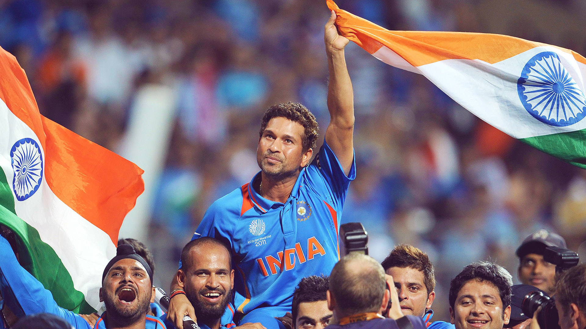

Sachin Tendulkar
The God of Cricket

Sachin Tendulkar Celebrating 2011 Cricket World Cup India
Here's a time line of Sachin Tendulkar :
-
1973 : Born April 24, Mumbai.
-
1988 : Scores 100 not out in his first first-class match for Bombay against Gujarat
in the Ranji Trophy becoming the youngest cricketer to score a century on his first-class debut,
aged 15 years and 232 days.
-
1989 : Makes Test debut for India against Pakistan in Karachi at the age of 16.
-
1990 : Scores maiden Test century against England at Old Trafford.
-
1992 : At the age of 19 he becomes the first overseas-born player to represent
Yorkshire.
-
1994 : Claims his first ODI century against Sri Lanka in Colombo after 79 one-day
matches.
-
1996 : Leading run scorer at World Cup played in India, Pakistan and Sri Lanka
with a total of 523 runs.
-
1997 : Named Wisden Cricketer of the Year.
-
1998 : Scores his first double century for Mumbai against Australia
in the Brabourne Stadium.
-
1999 : Involved in India’s highest run-scoring ODI partnership with Rahul Dravid
as the pair put on 339 against New Zealand. In the same match,
he records the highest individual ODI score in Indian history with an unbeaten 186.
-
2000 : Gives up the captaincy of India after the two-Test series with South Africa.
-
2003 : Named the Player of the Tournament at the 2003 Cricket World Cup and scores
673 runs, the highest by any player in the tournament.
-
2005 : Overtakes Sunil Gavaskar’s record of the highest number of Test centuries
by claiming his 35th against Sri Lanka in Delhi.
-
2006 : Overtakes Kapil Dev claiming the record for the highest amount of
Test appearances for India with 135.
-
2006 : January 3 - Edges past Brian Lara’s world record of runs scored in Tests
away from home with 5,751 runs.
-
2006 : June - Becomes the first player to score over 15,000 ODI runs during a
match against South Africa in Belfast.
-
2008 :
-
March :Plays a record-breaking 417th ODI match against Australia.
-
June :Nominated as the ‘Icon Player’ of IPL franchise Mumbai Indians,
signing a deal worth US Dollars 1,121,250 per season.
-
August :Becomes just the third player in Test match history,
and the first from India, to play 150 matches when he is selected in the third
Test against Sri Lanka.
-
October 17 :Becomes the highest run scorer in Test cricket,
passing Lara’s previous mark of 11,953, when he reaches 16 in the first innings of
the second Test against Australia.
-
2010 :
-
February 24 :Scores the first double century in one-day international
history, hitting an unbeaten 200 against South Africa.
-
April :Named player of IPL3 after finishing as the tournament’s
top run-scorer.
-
August :Becomes most capped player in Test history,
making his 169th Test appearance in the third Test against Sri Lanka in Colombo
to overtake former Australia captain Steve Waugh.
-
2011 :
-
March :Hits two tournament centuries as co-hosts India win the World Cup.
-
November :Becomes the first man to score 15,000 Test runs
during Test series against West Indies.
-
2012 :
-
March :Scores his 100th international century in an Asia Cup match
against Bangladesh, the first player ever to do so
-
December 23 :Announces retirement from one-day international cricket.
-
2013 - October 10 : Announces he will retire from Test cricket after playing in
his 200th Test against the West Indies in November.